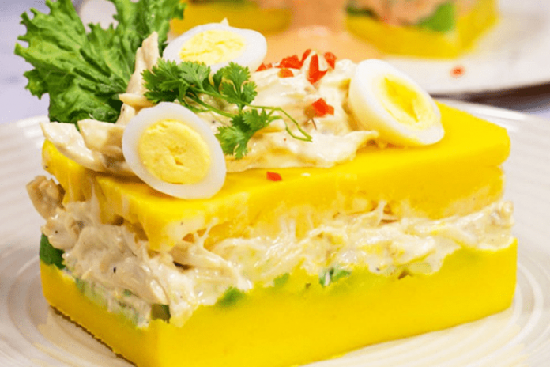

Causa

La causa rellena es sin duda uno de los platos más tradicionales de la
cocina peruana. Realizada en base de papa, ají amarillo, limón y puede ser
de atún, pollo o mariscos.
Ingredientes
- 4 limones
- Aceite vegetal
- Pechuga de pollo deshilachada
- Mayonesa
- 3 huevos cocidos
- Lechuga
- Papa amarilla
- 2 ajíes amarillos licuados sin venas
- Sal y pimienta
- Medio kg de alverjas
- 1 palta
- Medio kg de zanahorias
- Perejil